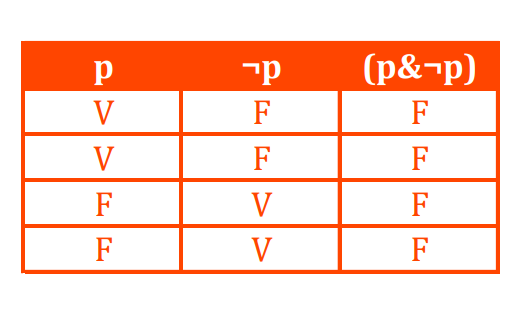

Introduction
To understand the context of this text I must first set out the facts of my project. It is addressed to the new generations indirectly through the adults who act directly with them. The project called Juguem is an online platform for learning and reflection, based on a learning library and a repository of games designed by non-profit designers. The aim is to create new platforms for reflection on the preset institutional and cultural roles in the socialisation and evolution of the individual.
I would like to start with this reflection by first giving some thoughts on speciesism and technology around us. And to continue with the morality and responsibility of our actions. As well as recalling Focault's panopticon on design and designer.
Reflection
The three aspects that Freud attacks in his book Civilization and Its Discontents where man is distorted. These are: the conception and disapproval of human weakness around death, the dissatisfaction of not being able to control nature and finally the lack of understanding of social relations. If we take a closer look inside, all these actions provoke a counter-movement of desire to satisfy them. Even if we know that we cannot control everything around us, without thinking about its ethical form, it creates a desire to manipulate and gain power.
Some human aspirations then are to manipulate and control nature. We can't control the catastrophes around us, but I can cut down that tree. This would be an example of the juxtaposed desire for dissatisfaction with nature. For in many ways the control of things to satisfy a personal need is an action as selfish, or survival, as long as there has been no ethical reflection before or after to cover what is taken from the thing itself or if there is to be anything extracted. Therefore, we have that part of ethics that validates an action, with reflection. It would therefore be well said that technology is therefore selfish as it has become necessary to live in this schematised society.
In order to define what technology is, we need many points of view, although in the introductory text of Val Dusek's Philosophy of Technology, he defines technology in three aspects; technology as hardware, technology as rules and technology as system. We could say that any transformation of the human being with any matter is technology. It is a tool to help the human being.

But in my case, it only raises another question for me: What about animals? What about nature? Doesn't nature use its own materials to create roads or homes, even tools for its vital existence and comfort? For example, the crows of Caledonia make tools out of plants to create a kind of hook to help them hunt insects. Or whistler monkeys use rocks to open coconuts. But in all these cases we would agree that it is technology, but the definition created mainly excludes the animal point of view as a consequence. We create this superimposition over nature. Forgetting that human beings are animals and are part of nature.
We exercise role power by imposing the law of the strongest or the best argumentation. Forgetting that we impose our desires over the needs or desires of other living beings. Validating the dissatisfaction declared by Freud. Looking at it from another point of view, the designs of artefacts pretend to control our actions or at least take them into account. This would be a form of control of human behaviour both socially and socially.
Design actions to be able to control how the users execute the actions. In
which in many cases it is called creating intuitive acts for the common
benefit. It causes these social barriers between some social classes and
others. It is an irruption into the iteroparity of the evolution of the human
knowledge. It is an imposition as a rule.
But in the end many of our actions are based on power and control. Either because it is given or because you exercise it. In all cases it suffers from the paradox of the exploiter exploited. And it really is a great example of the Panopticon. Because it allows you to control from probability. That maybe they are watching me is the same function that many traffic or protection cameras have. Or the simple shame of the adolescent that we have all felt to a greater or lesser degree. So we cannot say whether we are being watched or not, and the laws of quantum physics and Schrodinger's cat would come together to validate the situation, that we are being watched and at the same time we are not being watched. Although the truth table would tell us that this is false, our instinct would tell us that since we do not know how to differentiate between the one and the other, we choose between them. And by nature, we always choose to be safe, and it can be either one or the other, depending on the situation.

And in this way we are able to control and manipulate the facts. And continue to suffer the discontent of not being able to control people. Because that's what I mean, design is control and manipulation, of materials and actions. We provoke sensations and manipulate contents to represent ideas, objects, cultures, institutions. But they are only forms of satisfaction due to the power that is indirectly granted to all creative action, whether technological or not.
As a last point, I just want to reaffirm that the quest for power does not only reside in humans but also in animals. Humans may have evolved a lot, they may have even created the internet, but we are still part of nature.